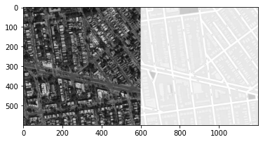

Pix2Pix
Goals
In this notebook, you will write a generative model based on the paper Image-to-Image Translation with Conditional Adversarial Networks by Isola et al. 2017, also known as Pix2Pix.
You will be training a model that can convert aerial satellite imagery (“input”) into map routes (“output”), as was done in the original paper. Since the architecture for the generator is a U-Net, which you’ve already implemented (with minor changes), the emphasis of the assignment will be on the loss function. So that you can see outputs more quickly, you’ll be able to see your model train starting from a pre-trained checkpoint - but feel free to train it from scratch on your own too.
Learning Objectives
- Implement the loss of a Pix2Pix model that differentiates it from a supervised U-Net.
- Observe the change in generator priorities as the Pix2Pix generator trains, changing its emphasis from reconstruction to realism.
Getting Started
You will start by importing libraries, defining a visualization function, and getting the pre-trained Pix2Pix checkpoint. You will also be provided with the U-Net code for the Pix2Pix generator.
1 | import torch |
U-Net Code
The U-Net code will be much like the code you wrote for the last assignment, but with optional dropout and batchnorm. The structure is changed slightly for Pix2Pix, so that the final image is closer in size to the input image. Feel free to investigate the code if you’re interested!
1 | def crop(image, new_shape): |
PatchGAN Discriminator
Next, you will define a discriminator based on the contracting path of the U-Net to allow you to evaluate the realism of the generated images. Remember that the discriminator outputs a one-channel matrix of classifications instead of a single value. Your discriminator’s final layer will simply map from the final number of hidden channels to a single prediction for every pixel of the layer before it.
1 | # UNQ_C1 (UNIQUE CELL IDENTIFIER, DO NOT EDIT) |
1 | # UNIT TEST |
Success!
Training Preparation
Now you can begin putting everything together for training. You start by defining some new parameters as well as the ones you are familiar with:
- real_dim: the number of channels of the real image and the number expected in the output image
- adv_criterion: an adversarial loss function to keep track of how well the GAN is fooling the discriminator and how well the discriminator is catching the GAN
- recon_criterion: a loss function that rewards similar images to the ground truth, which “reconstruct” the image
- lambda_recon: a parameter for how heavily the reconstruction loss should be weighed
- n_epochs: the number of times you iterate through the entire dataset when training
- input_dim: the number of channels of the input image
- display_step: how often to display/visualize the images
- batch_size: the number of images per forward/backward pass
- lr: the learning rate
- target_shape: the size of the output image (in pixels)
- device: the device type
1 | import torch.nn.functional as F |
You will then pre-process the images of the dataset to make sure they’re all the same size and that the size change due to U-Net layers is accounted for.
1 | transform = transforms.Compose([ |
1 | a,b = dataset[0] |
1 | show_tensor_images(a,1,(600,1200)) |

1 | b |
0
Next, you can initialize your generator (U-Net) and discriminator, as well as their optimizers. Finally, you will also load your pre-trained model.
1 | gen = UNet(input_dim, real_dim).to(device) |
While there are some changes to the U-Net architecture for Pix2Pix, the most important distinguishing feature of Pix2Pix is its adversarial loss. You will be implementing that here!
1 | # UNQ_C2 (UNIQUE CELL IDENTIFIER, DO NOT EDIT) |
1 | # UNIT TEST |
Success!
Pix2Pix Training
Finally, you can train the model and see some of your maps!
1 | from skimage import color |
1 |